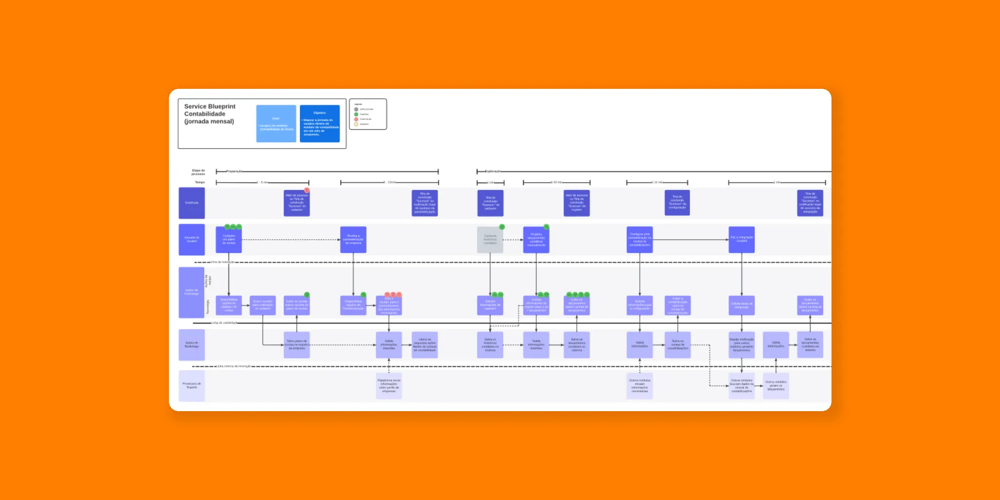
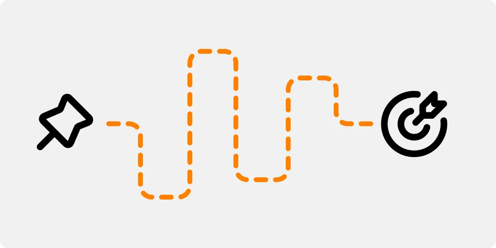
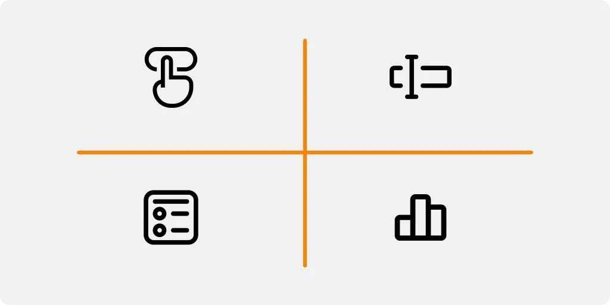
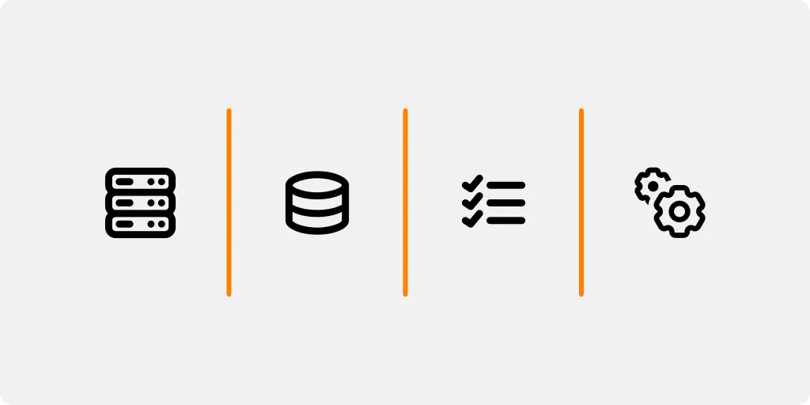
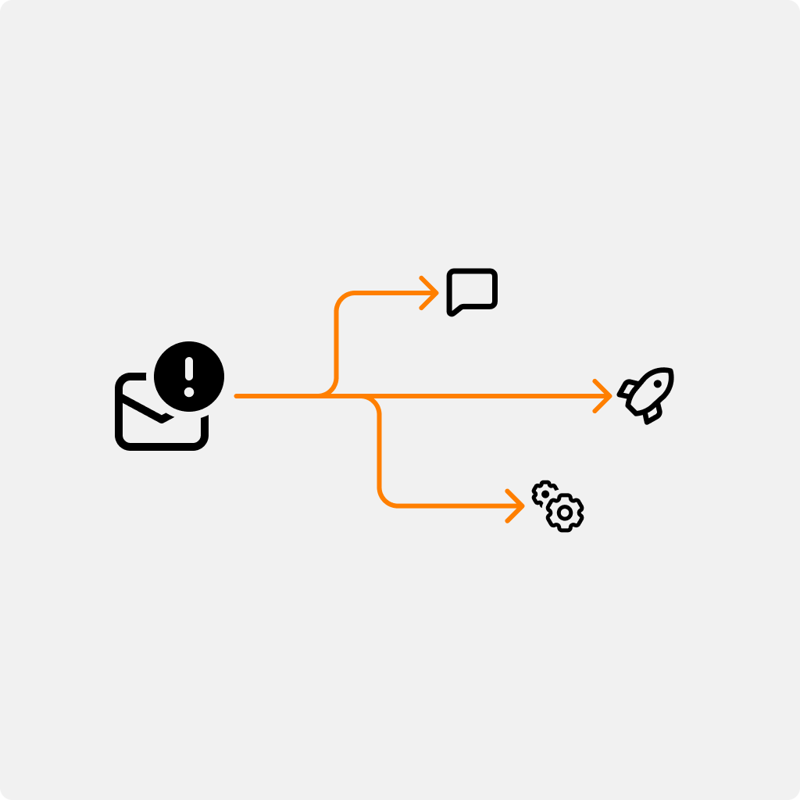
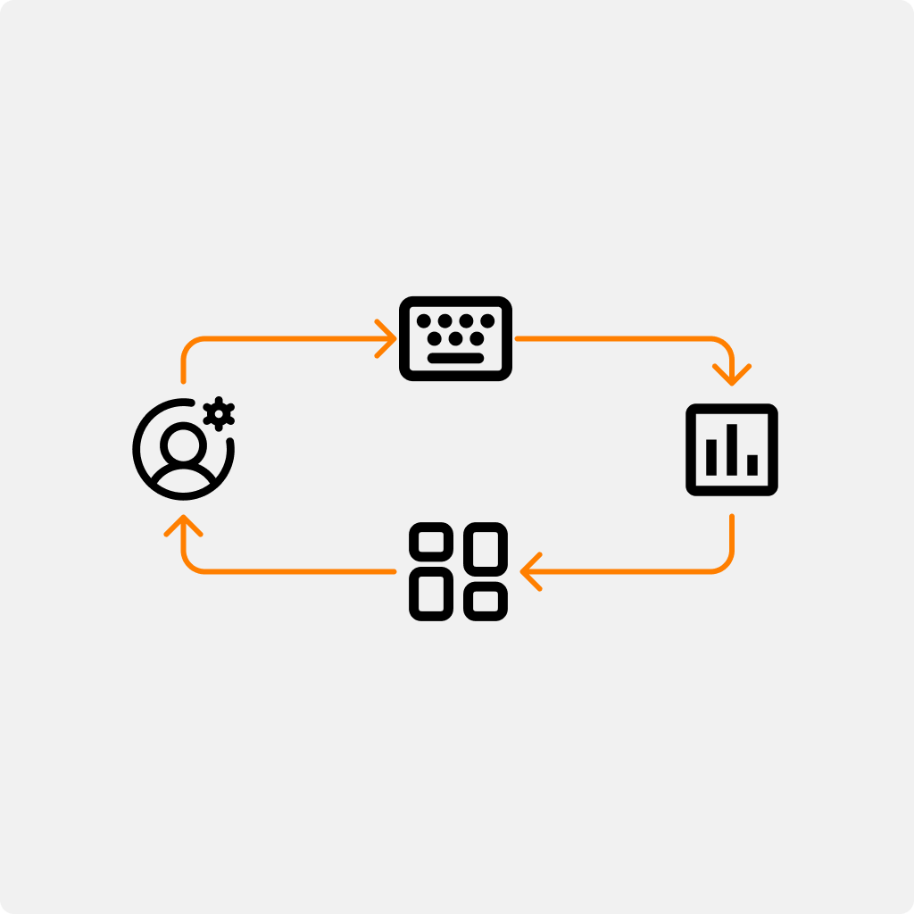
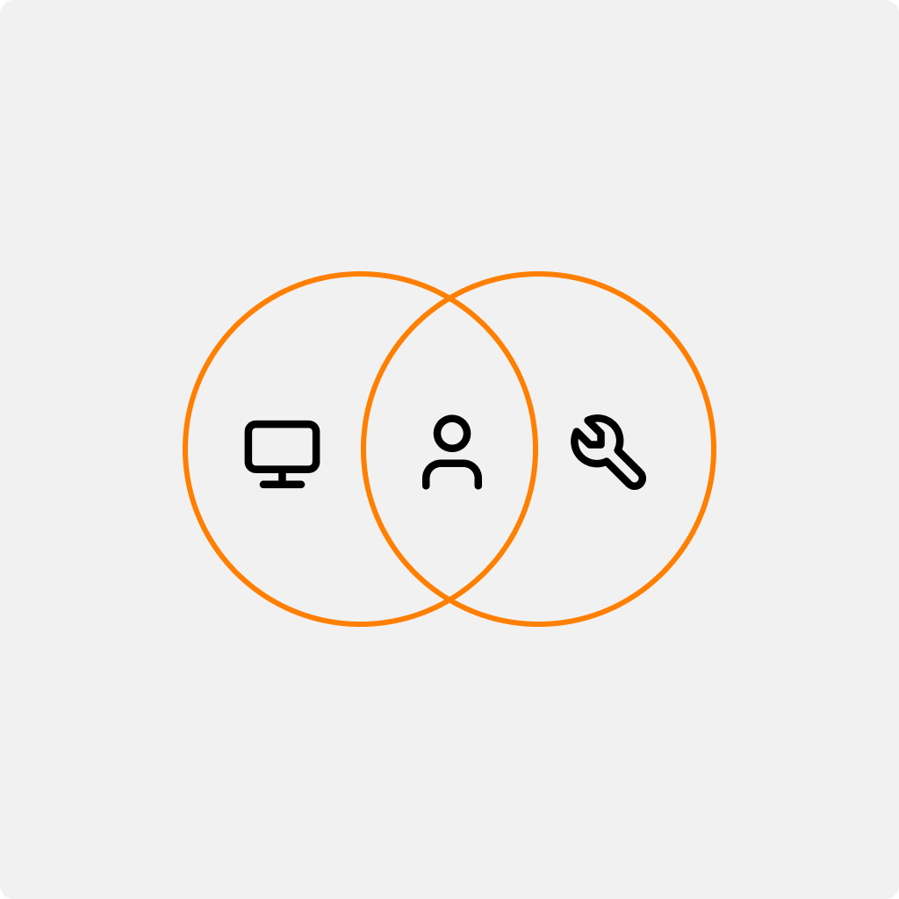
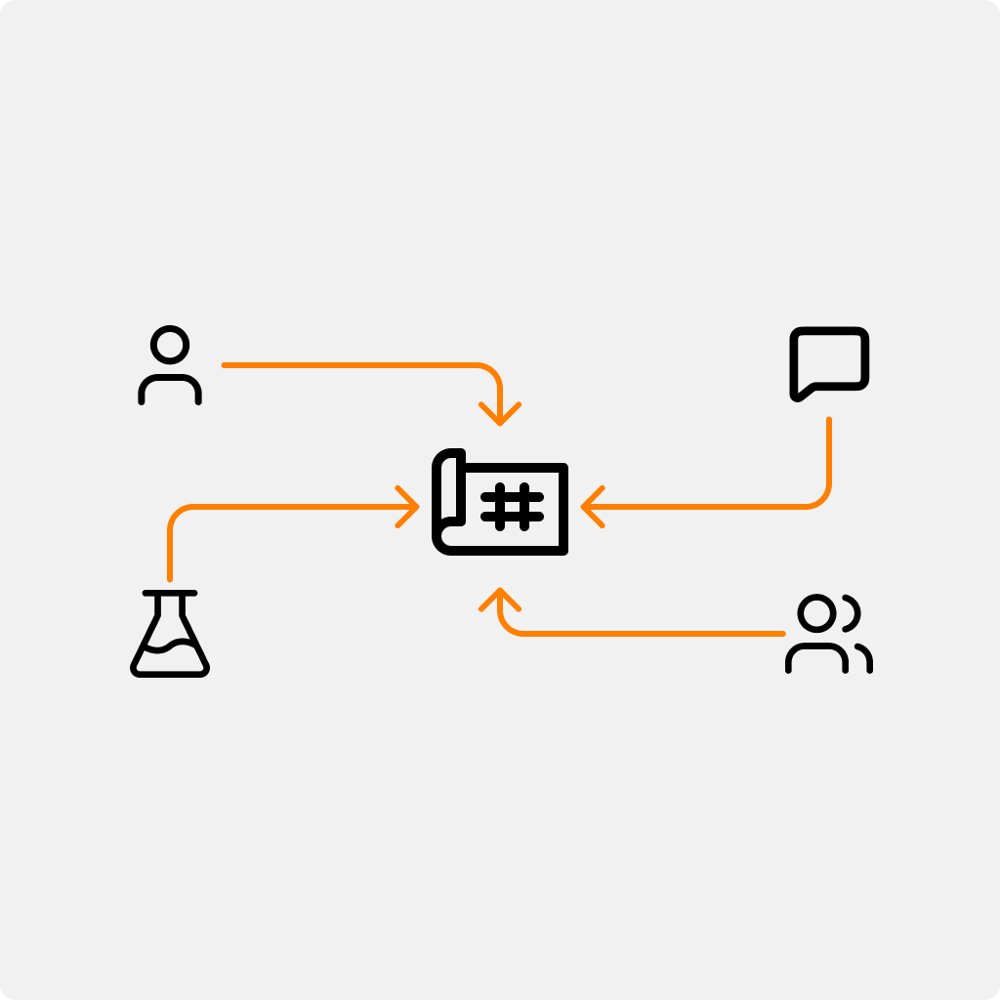
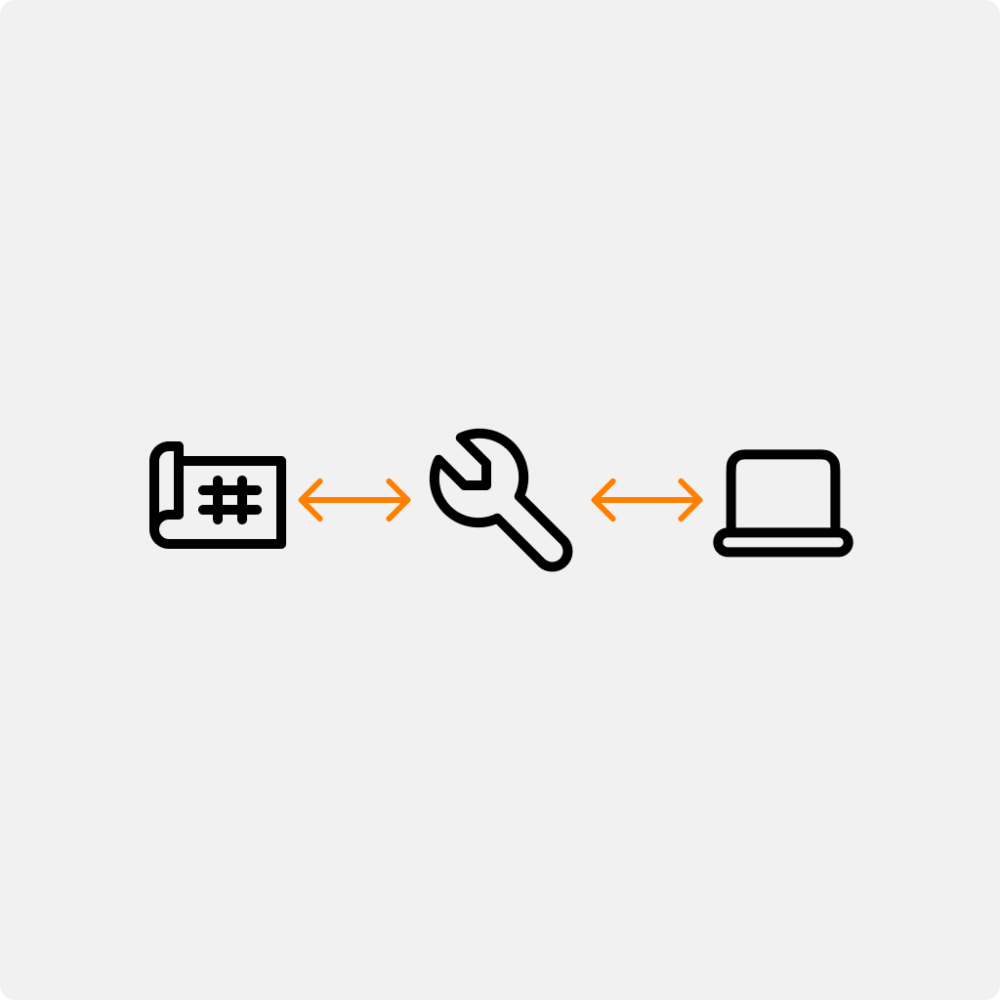
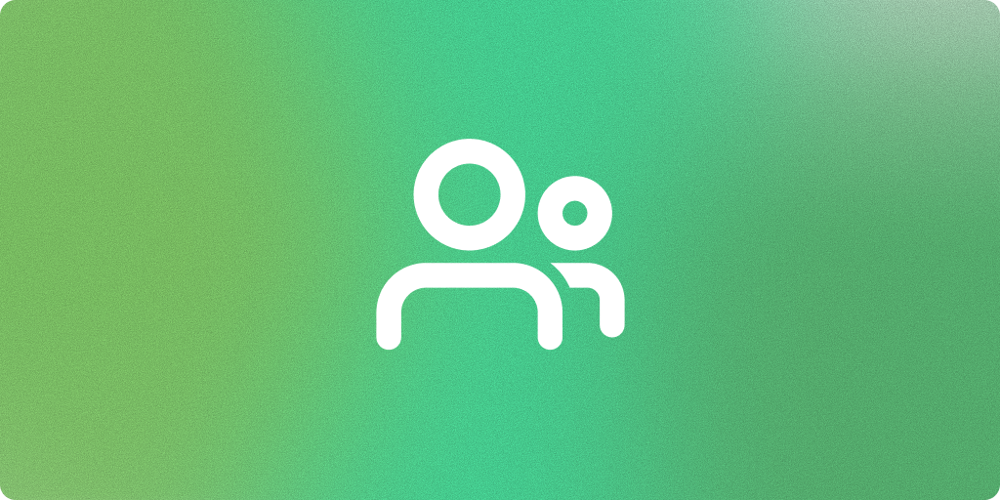

Service Blueprint

Service Design
UX Strategy
Optimization
Project
The Accountability Team relied on a complex workflow involving multiple systems, manual processes, and cross-functional teams. As the product evolved, it became increasingly difficult to understand where delays, duplicated work, and usability issues originated. Before proposing interface improvements, we needed visibility into the complete service ecosystem—not just the screens users interacted with.
Goals
- Understand the complete end-to-end service
- Identify operational bottlenecks
- Reveal opportunities for automation
- Align product, design and business teams around a shared workflow
- Prioritize improvements with the highest business impact
Mapping the End-to-End Journey
We documented every step of the Accountability process—from customer actions to internal operations—creating a shared understanding across teams.

Customer Journey
Understanding the user experience
Mapped each step users took to complete their tasks, highlighting key goals, decisions, and interactions throughout the service. This created a shared view of the end-to-end experience before identifying opportunities for improvement.

Frontstage
What users see
Documented every customer-facing touchpoint—including interfaces, notifications, support interactions, and system feedback—to understand how the service was experienced from the user's perspective.

Backstage
What powers the experience
Mapped the internal processes, teams, and systems supporting each interaction. This revealed hidden dependencies, manual work, and operational bottlenecks that were invisible to users but directly impacted the overall experience.
Visualizing Dependencies
Instead of separating Frontstage and Backstage into multiple tiny sections:
Finding the Biggest Sources of Friction
The blueprint revealed recurring issues such as:
- Repeated manual work
- Unnecessary approvals
- Unclear ownership
- Disconnected systems
- Inconsistent communication

Prioritizing Improvements
Using the blueprint, we identified opportunities to:
- Automate repetitive tasks
- Simplify critical workflows
- Improve system visibility
- Reduce unnecessary touchpoints
- Introduce contextual guidance

Creating a Shared Understanding
The blueprint became a communication tool between Product, Engineering, Business, and the Accountability Team. Instead of discussing isolated screens, stakeholders could discuss the entire service and understand how decisions impacted other areas.

Validating the Blueprint
The blueprint was reviewed with stakeholders and end users to ensure it accurately reflected the existing workflow before guiding future improvements.

A Living Artifact
Because service blueprints should evolve alongside the product.

Impact
Better visibility
Teams gained a shared understanding of the complete service ecosystem rather than isolated features.
Faster prioritization
Pain points became easier to identify and prioritize based on customer impact.

Cross-functional alignment
Product, Engineering and Business teams used the blueprint as a common decision-making tool.

Foundation for future improvements
The blueprint became a living reference for future initiatives, reducing discovery time for new projects.